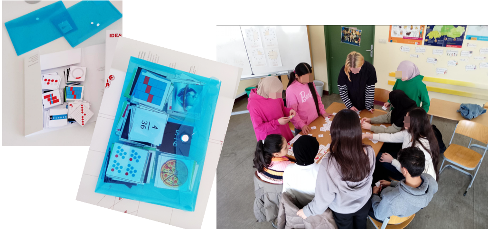
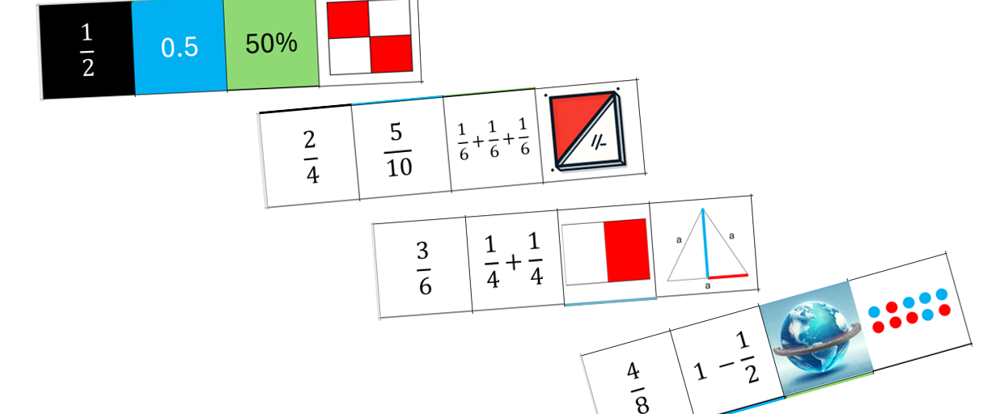
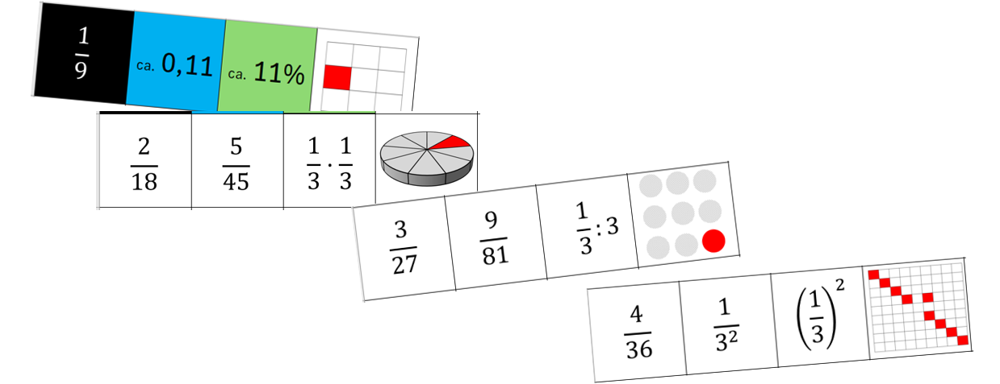
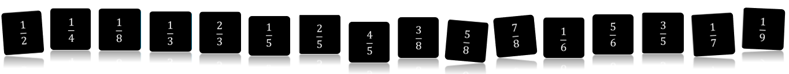
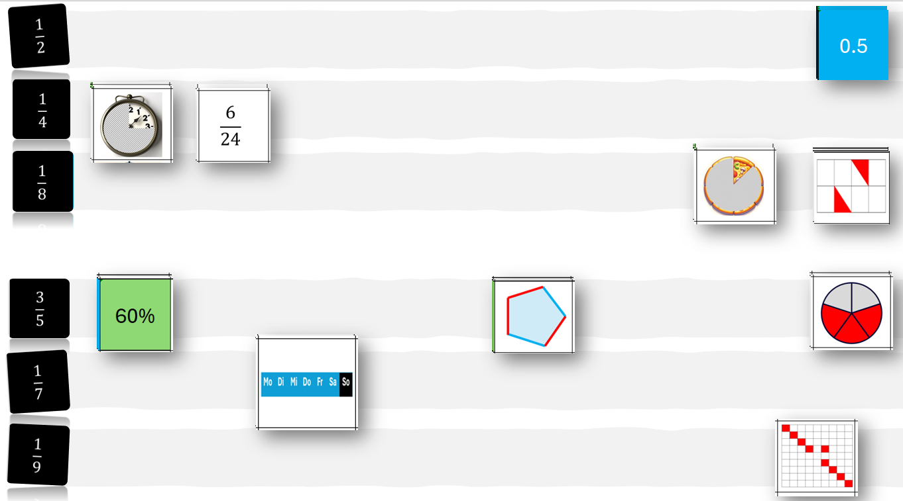
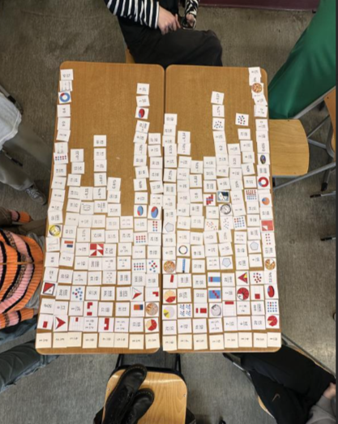
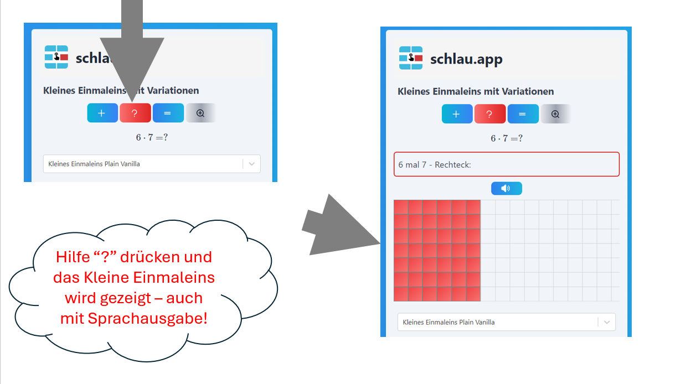
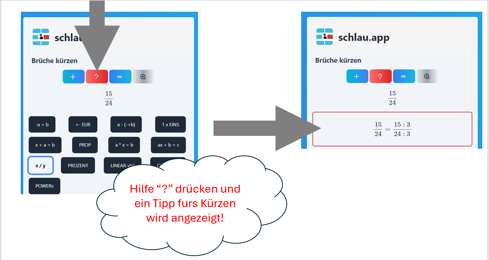

Das Legespiel Matheprofi ist die ideale Ergänzung zu schlau.app! Es bietet dir Mathe zum Anfassen. Das ist ein weiterer Weg zum Sicherwerden. Und Sicherheit bei den Themen Brüche, Dezimalbrüche und Prozent brauchst bei den allermeisten Mathethemen in der Mittelstufe.
Alle Techniken, die du beim Game Matheprofi einsetzen kannst, findest du bei schlau.app, z.B. unter Prozent und Prop. Als Basis brauchst du das Kleine Einmaleins, Taste 1x EINS und hier hast du auch die Chance, das Teilen und Dezimalbrüche einzuüben. Probiere es aus!

Das Spielmaterial besteht aus 16 x 16 = 256 quadratischen Karten. Jede Karte ist ca. 4 cm groß. Damit lässt sich die gesamte 16x16-Matrix auf 2 Schulbänken auslegen. Die Karten sind Bilder von Brüchen, Dezimalbrüchen und Prozentangaben sowie Graphiken, die Proportionen ausdrücken. Die Brüche gibt es in verschiedenen Erweiterungen, z.B. 1/4 kommt auch als 2/8 vor. Einige Bruch-Darstellungen sind kleine Matheaufgaben, z.B. beim Bruch 1/3 kommt auch die Darstellung 1/2 + 1/6 vor. Ziel des Spiels ist es, zur Auswahl von 16 Brüchen jeweils die dazu passenden 15 Darstellungen zu finden. Dieses Ziel lässt sich allein oder in verschiedenen Partner-Konstellationen erreichen. Einige findest du in dieser Anleitung.

Für das Verhältnis 1/2 gibt es den Dezimalbruch, den Prozentsatz, Flächenanteile. Außerdem erlaubt der Volumen- und Flächenanteil bei der Weltkugel eine anschauliche Diskussion. Das Längenverhältnis im gleichseitigen Dreieck setzt etwas Geometriegefühl voraus. Die Rechenaufgaben erfordern bereits Bruchrechnen. So ist für jeden Level etwas dabei.

Das Verhältnis 1/9 lädt Fortschrittene dazu ein, mit dem Quadrat zu spielen (wobei auf 3 hoch -2 verzichtet wurde, um den Jahrgangsbereich nicht einzuschränken). Anfänger der Statistik finden hier verschiedene Darstellungen der relativen Häufigkeit. Im letzten Beispiel lassen sich sogar beide Themen gemeinsam durchnehmen: 1 von 9 und 9 von 81. Diese Visualisierungen kann die betreuende Lehrkraft leicht vertiefen.

Die Auswahl der Brüche: außer den Stammbrüchen 1/2 bis 1/9 kommen alle weiteren einfachen Brüche hinzu, soweit sie nicht bei niedrigeren Brüchen schon aufgetreten sind. So fehlen z.B. 2/4 und 4/6. Bei den Neunteln sind die kürzbaren Brüche 3/9 und 6/9 schon bei den Dritteln vertreten. Die 16er-Reihe ist also in diesem Sinn vollständig.

Bei der Anordnung bilden normalerweise die Stammbrüche eine Achse. Diese kann horizontal oder vertikal sein. Beispiel vertikale Stammbruch-Achse: als Zeilen können dann die anderen Darstellungen rechts angelegt werden. Dies kann nach Regeln erfolgen, z.B. alle Graphiken ganz rechts in der Matrix parken. Oder links neben den Stammbrüchen erstmal der Dezimalbruch oder der Prozentsatz.

In einer noch nicht wenig bekannten Klasse ist ein Spin-off der Aktivierung und des Unterhaltungswertes auch eine Evaluation der Vorkenntnisse. Beim Beispiel mit einer Willkommensklasse werden ganz unterschiedliche Niveaus von Vorkenntnissen deutlich und entsprechender individueller Förderbedarf. Dennoch sorgt das Spiel offenbar für eine Synergie und gemeinsam wurde ein fast vollständiges Ergebnis erreicht.
Das Brüche kürzen ist noch sehr anstregend? Übe mit schlau.app das kleine Einmaleins, dann verschwinden die Probleme in kurzer Zeit, meist nach wenigen Tagen.

Du willst dich im Brüche kürzen weiter steigern? Wähle in schlau.app die Taste x/y und nutze die Hilfeteaste ?
